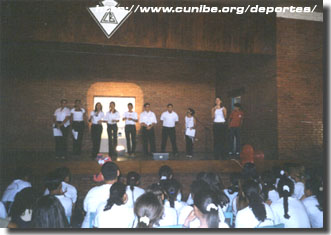
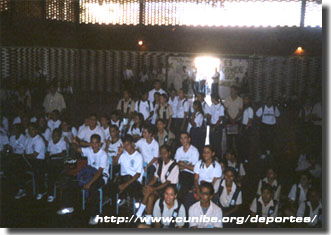
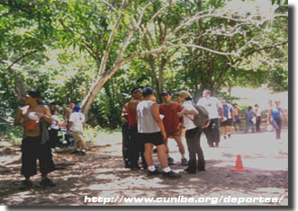

|
|
EXPOECOLOGÍA
Salud Eduación y Ambiente
MISION
Fomentar espacios de interacción directa entre el CUNIBE y las Unidades Educativas, Comunidades Organizadas y Empresas de la región zuliana, desarrollando en estos centros actividades de carácter ambiental, ecológicas-recreativas y de salud, con la finalidad de multiplicar e informar los avances de último momento en las áreas antes mencionadas.

VISION
Ser una Instutición modelo en la difusión de investigaciones de tipo ambiental, ecológicas, recreativas y de salud, orientadas a estimular un cambio de conducta en los alumnos que cursan estudios en las diferentes modalidades del sistema educativo, así como en las empresas y comunidades organizadas de la región zuliana y del futuro profesional en la interacción y uso sustentable de los recursos ambientales.

¿Qué es el EXPOECOLOGÍA?
Es un evento de carácter ecológico recreativo y de salud, donde los alumnos cursantes de la cátedra Formación Deportiva II, estarán en capacidad de exhibir las competencias teóricas y prácticas en las áreas ecológicas, ambientales, recreativas y de salud, adquiridas en el proceso de aprendizaje.

OBJETIVOS
 Promover en los alumnos un cambio de conducta, en cuanto a la toma de conciencia y motivación conservacionista del ambiente . Promover en los alumnos un cambio de conducta, en cuanto a la toma de conciencia y motivación conservacionista del ambiente .
Desarrollar investigaciones en el área ecológica, recreativa, y de salud con la finalidad de abordar un universo de temas de interés para el educando.
Capacitar al estudiante como investigador para que proporcione ideas, proyecto y soluciones que permitan un deasarrollo sustentable.
Arriba
|